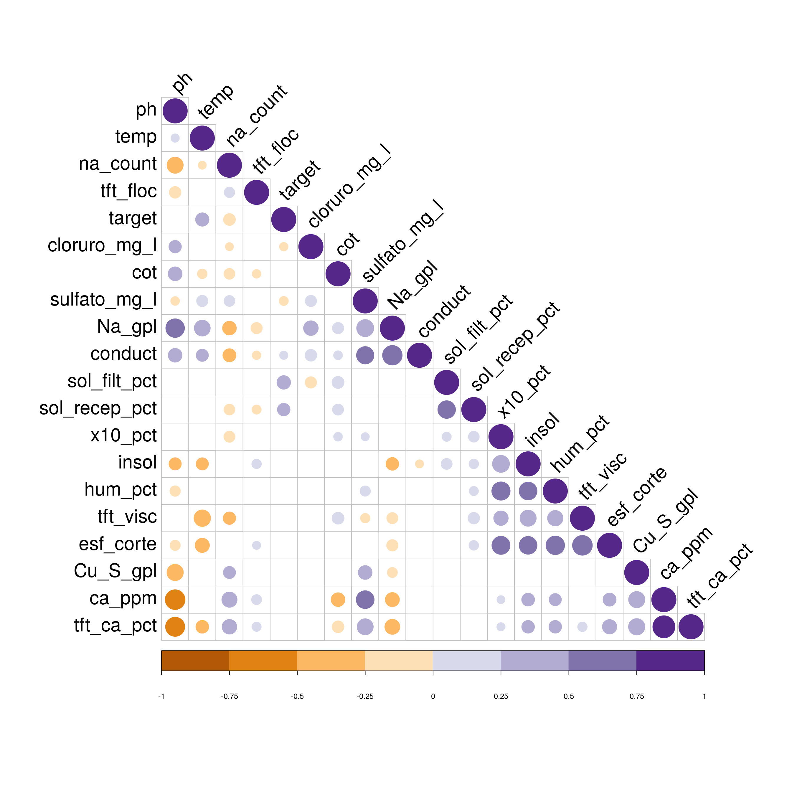
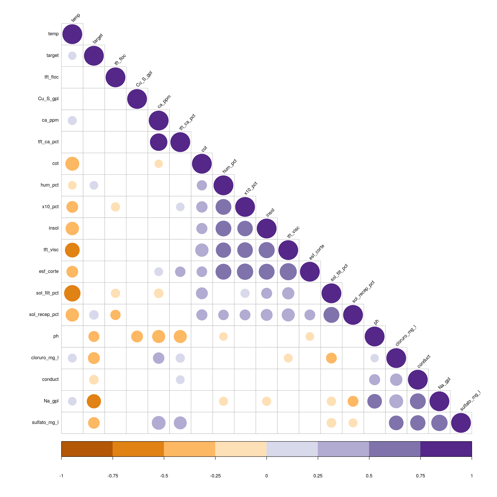
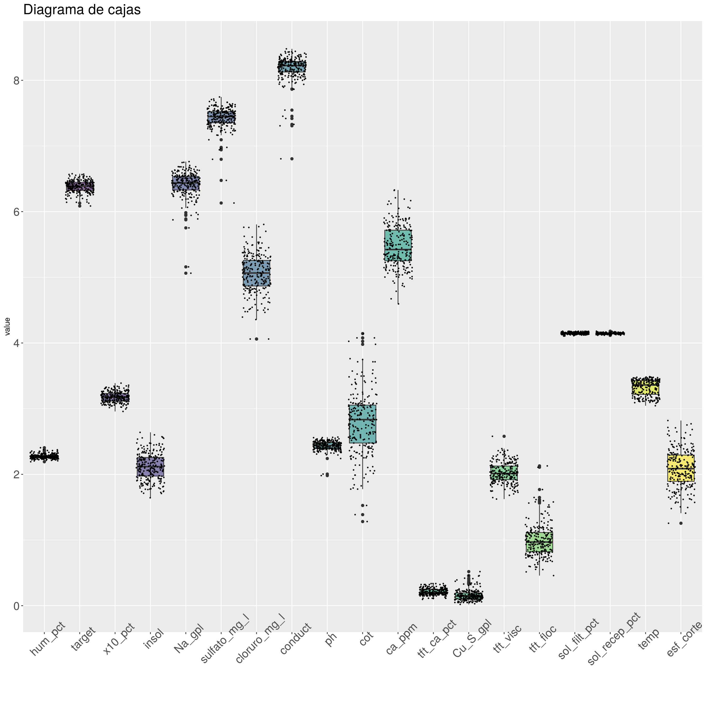
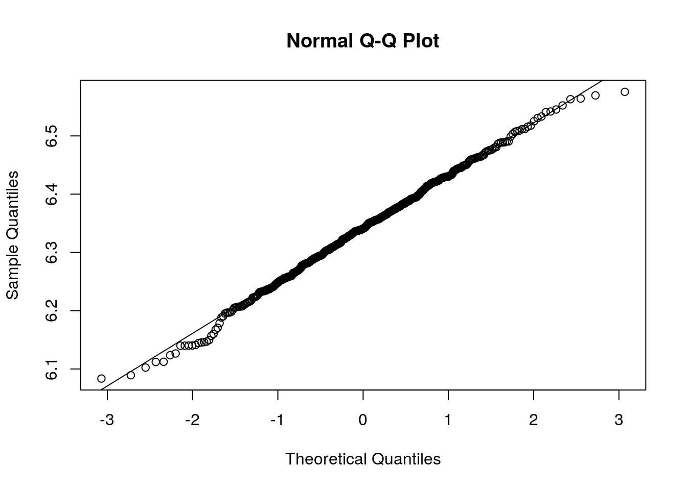
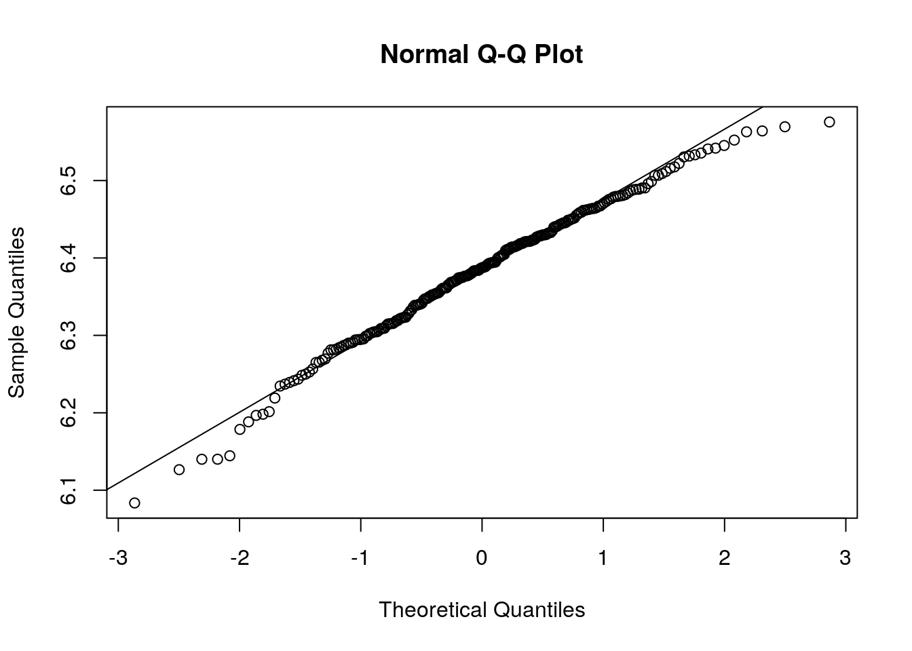
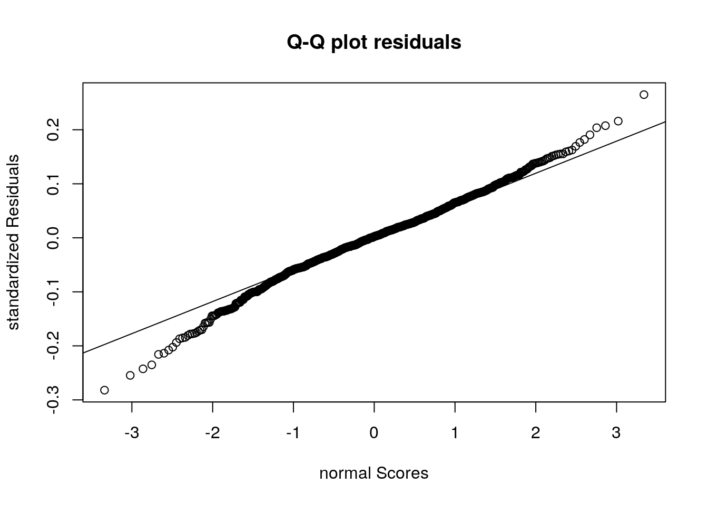
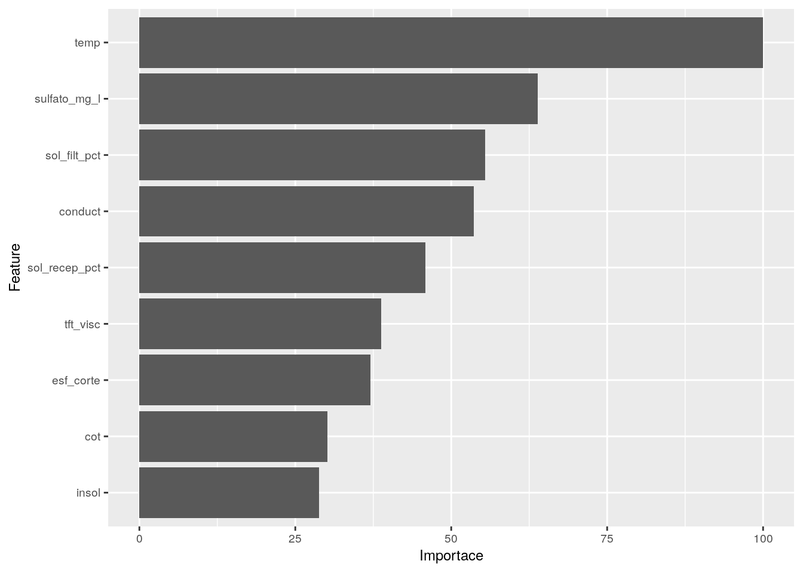
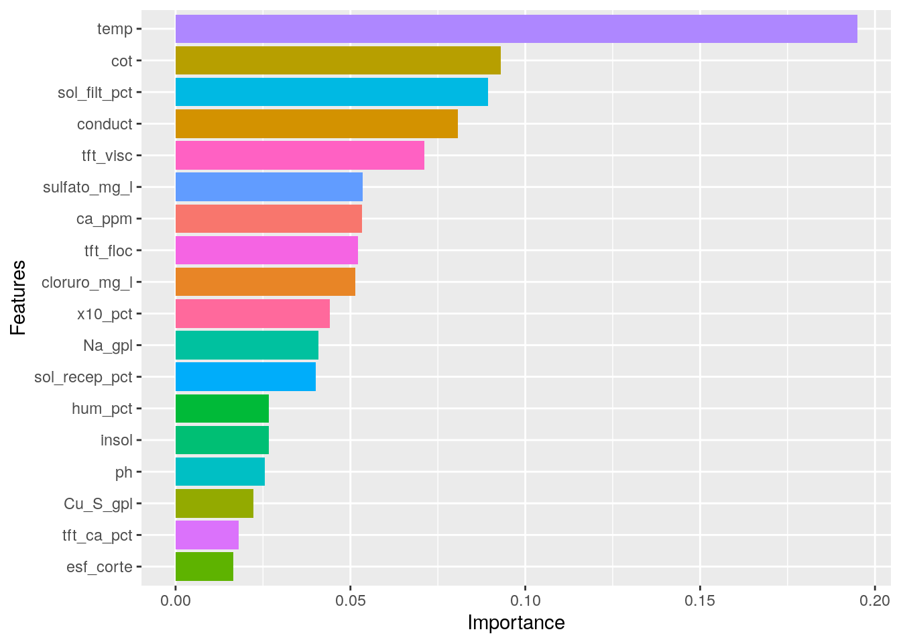
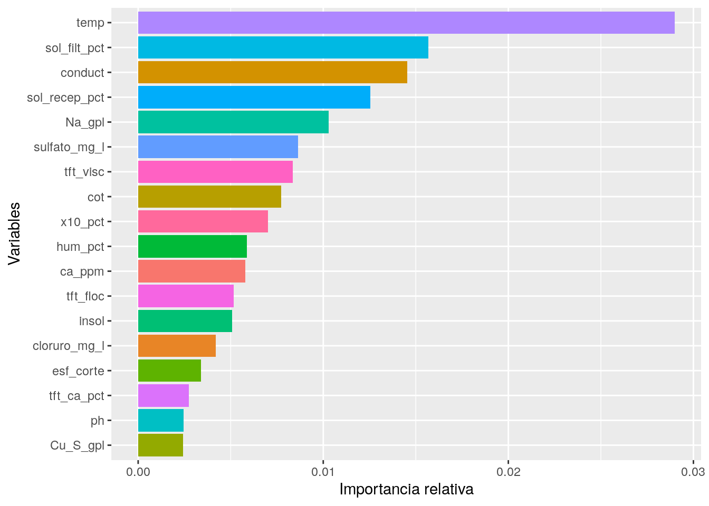
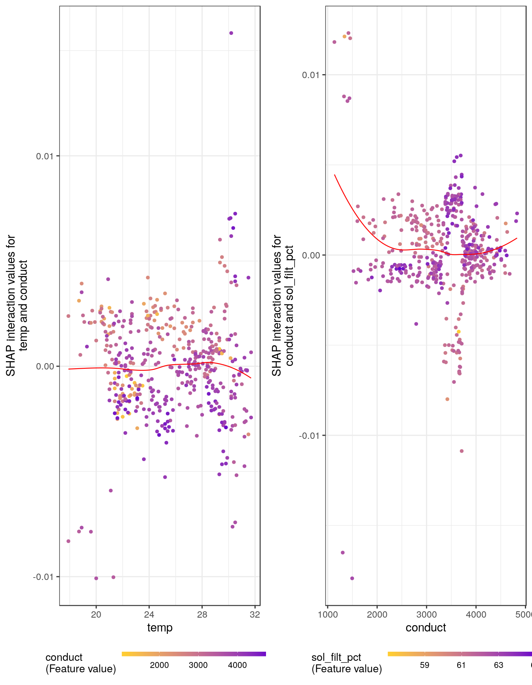

Excelencia Operacional Puerto
Cecil V.
2019-09-30
Last updated: 2019-09-30
Checks: 6 1
Knit directory: ExOpMLP/
This reproducible R Markdown analysis was created with workflowr (version 1.4.0). The Checks tab describes the reproducibility checks that were applied when the results were created. The Past versions tab lists the development history.
The R Markdown file has unstaged changes. To know which version of the R Markdown file created these results, you’ll want to first commit it to the Git repo. If you’re still working on the analysis, you can ignore this warning. When you’re finished, you can run wflow_publish to commit the R Markdown file and build the HTML.
Great job! The global environment was empty. Objects defined in the global environment can affect the analysis in your R Markdown file in unknown ways. For reproduciblity it’s best to always run the code in an empty environment.
The command set.seed(20190929) was run prior to running the code in the R Markdown file. Setting a seed ensures that any results that rely on randomness, e.g. subsampling or permutations, are reproducible.
Great job! Recording the operating system, R version, and package versions is critical for reproducibility.
Nice! There were no cached chunks for this analysis, so you can be confident that you successfully produced the results during this run.
Great job! Using relative paths to the files within your workflowr project makes it easier to run your code on other machines.
Great! You are using Git for version control. Tracking code development and connecting the code version to the results is critical for reproducibility. The version displayed above was the version of the Git repository at the time these results were generated.
Note that you need to be careful to ensure that all relevant files for the analysis have been committed to Git prior to generating the results (you can use wflow_publish or wflow_git_commit). workflowr only checks the R Markdown file, but you know if there are other scripts or data files that it depends on. Below is the status of the Git repository when the results were generated:
Ignored files:
Ignored: .Rhistory
Ignored: .Rproj.user/
Ignored: data/comminution/
Ignored: data/mine/
Ignored: data/port/
Ignored: output/mine/
Untracked files:
Untracked: analysis/.gitignore
Untracked: code/__pycache__/
Untracked: code/utils_gps.py
Untracked: code/utils_mine.py
Untracked: docs/figure/
Untracked: figure/
Unstaged changes:
Modified: .gitignore
Modified: analysis/port.Rmd
Note that any generated files, e.g. HTML, png, CSS, etc., are not included in this status report because it is ok for generated content to have uncommitted changes.
These are the previous versions of the R Markdown and HTML files. If you’ve configured a remote Git repository (see ?wflow_git_remote), click on the hyperlinks in the table below to view them.
| File | Version | Author | Date | Message |
|---|---|---|---|---|
| Rmd | 13645bd | ceanver | 2019-09-30 | First Commit |
1 Introduction
The goal of this project is to provide an insight of what are the main features that affect the filtering rate at port. Additionally, we aim to construct a predictive model that will be able to give an accurate result for the filtering rate beforehand.
2 Dependencies
2.1 Required libraries
multiplot <- function(..., plotlist=NULL, file, cols=1, layout=NULL) {
plots <- c(list(...), plotlist)
numPlots = length(plots)
if (is.null(layout)) {
layout <- matrix(seq(1, cols * ceiling(numPlots/cols)),
ncol = cols, nrow = ceiling(numPlots/cols))
}
if (numPlots==1) {
print(plots[[1]])
} else {
grid.newpage()
pushViewport(viewport(layout = grid.layout(nrow(layout), ncol(layout))))
for (i in 1:numPlots) {
matchidx <- as.data.frame(which(layout == i, arr.ind = TRUE))
print(plots[[i]], vp = viewport(layout.pos.row = matchidx$row,
layout.pos.col = matchidx$col))
}
}
}2.2 Load data to py
import os
import pandas as pd
import numpy as np
df_port = pd.read_excel('data/port/Data Diaria 2018 2019.xlsx', usecols = 'B:U')
df_port.rename(columns = {'Día Operacional': 'date'}, inplace=True)
df_port = df_port.drop(columns = ["date"])
# df_port['date'] = pd.to_datetime(df_port['date'])
# df_port = df_port.set_index('date')
# display(set(df_filtering.loc[~df_filtering["pH"].astype(str).str.isdigit(), "pH"].tolist()))
df_port = df_port.replace('S/O', np.nan) ## missing value string
df_port = df_port.replace({',': '.'}, regex=True)
df_port['COT'] = df_port['COT'].replace('< 0.1', 0)
df_port = df_port.dropna(how = 'all')
# df_port = df_port.apply(pd.to_numeric)
# df_port.fillna(df_port.mean(), inplace = True)
df_port.to_csv("data/port/df_port.csv", index = False)2.3 Load data to R
port <- as_tibble(fread("data/port/df_port.csv"))
port <- port %>%
clean_names(., "snake") %>%
rename(
hum_pct = humedad_percent, # % de humedad
x10_pct = x10_number_percent,
ph = p_h, # PH
tft_ca_pct = tft_ca_percent, #
tft_floc = tft_floculante_g_ton, # ? Floculante en g/Ton
sol_filt_pct = percent_solidos_filtrado, # % de sólidos filtrados
sol_recep_pct = percent_solidos_recep, # % de sólidos recibido
esf_corte = esfuerzo_de_corte, # Esfuerzo de corte
tasa_filt = tasa_kg_m2_hr, # Tasa de filtrado
Na_gpl = sodio_mg_l, # Concentración de sodio en g/L
Cu_S_gpl = cu_s_mg_l, # Concentración sulfuro de cobre en g/L
tft_visc = tft_viscosidad, # tft Viscocidad
insol = insoluble, # Cantidad de insolubles ???
temp = temperatura # Temperatura
)
port$na_count <- apply(port, 1, function(x) sum(is.na(x)))
dim(port)
# [1] 582 20
summary(port)
# hum_pct tasa_filt x10_pct insol
# Min. : 7.950 Min. :410.0 Min. : 0.00 Min. : 0.000
# 1st Qu.: 8.460 1st Qu.:534.5 1st Qu.:21.72 1st Qu.: 6.550
# Median : 8.670 Median :567.7 Median :23.01 Median : 7.590
# Mean : 8.703 Mean :570.2 Mean :22.98 Mean : 7.733
# 3rd Qu.: 8.850 3rd Qu.:604.0 3rd Qu.:24.20 3rd Qu.: 8.850
# Max. :10.080 Max. :717.4 Max. :28.63 Max. :13.000
# NA's :2 NA's :2 NA's :1 NA's :1
# Na_gpl sulfato_mg_l cloruro_mg_l conduct
# Min. :157.0 Min. : 459 Min. : 57.0 Min. : 901
# 1st Qu.:487.5 1st Qu.:1534 1st Qu.:129.0 1st Qu.:2945
# Median :580.0 Median :1701 Median :154.0 Median :3490
# Mean :565.4 Mean :1714 Mean :159.6 Mean :3341
# 3rd Qu.:650.5 3rd Qu.:1880 3rd Qu.:187.0 3rd Qu.:3870
# Max. :863.0 Max. :2709 Max. :331.0 Max. :4830
# NA's :3 NA's :3 NA's :3 NA's :3
# ph cot ca_ppm tft_ca_pct
# Min. : 6.25 Min. : 0.00 Min. : 24.0 Min. :0.1000
# 1st Qu.: 9.50 1st Qu.:10.00 1st Qu.:206.0 1st Qu.:0.2000
# Median :10.01 Median :14.50 Median :272.0 Median :0.2600
# Mean :10.01 Mean :15.52 Mean :287.8 Mean :0.2631
# 3rd Qu.:10.65 3rd Qu.:19.50 3rd Qu.:338.0 3rd Qu.:0.3000
# Max. :12.03 Max. :62.00 Max. :720.0 Max. :0.7800
# NA's :3 NA's :34 NA's :32 NA's :161
# Cu_S_gpl tft_visc tft_floc sol_filt_pct
# Min. :0.0200 Min. : 2.585 Min. :0.581 Min. :57.20
# 1st Qu.:0.1100 1st Qu.: 5.440 1st Qu.:1.358 1st Qu.:61.55
# Median :0.1600 Median : 6.240 Median :1.741 Median :61.99
# Mean :0.1972 Mean : 6.329 Mean :1.951 Mean :62.15
# 3rd Qu.:0.2400 3rd Qu.: 7.040 3rd Qu.:2.260 3rd Qu.:62.79
# Max. :1.1700 Max. :12.185 Max. :8.678 Max. :65.03
# NA's :3 NA's :1 NA's :54 NA's :4
# sol_recep_pct temp esf_corte na_count
# Min. :53.67 Min. :17.90 Min. : 2.508 Min. : 0.000
# 1st Qu.:61.62 1st Qu.:22.30 1st Qu.: 5.643 1st Qu.: 0.000
# Median :62.07 Median :25.20 Median : 7.059 Median : 1.000
# Mean :61.97 Mean :25.41 Mean : 7.365 Mean : 1.179
# 3rd Qu.:62.42 3rd Qu.:28.60 3rd Qu.: 8.855 3rd Qu.: 2.000
# Max. :64.34 Max. :31.70 Max. :15.763 Max. :16.000
# NA's :2 NA's :61 NA's :3133 Data engineering
3.1 Check variable data type
# sapply(port, class)
categ_cols <- names(port[,sapply(port, is.character)])
cat('There are', length(categ_cols), 'remaining columns with character values')
# There are 0 remaining columns with character valuesSince categorical variables enter into statistical models differently than continuous variables, storing data as factors insures that the modeling functions will treat such data correctly. The code performs the following tasks: rename variable names, change data type to factor and order ordinal factors.
4 Descriptive statistics
Descriptive statistics describe quantitatively the basic features of the data. These statistics will give us a head start by providing information about stuff like skewness, outliers (range) missing data points and (near) zero variance.
4.1 Data profile
5 Missing values
5.1 Frequency
With this plot we can see that the variables that present the highest amount of missing data are: - esfuerzo de corte - tft_ca_ppt - temp - tft_floc - cot - ca_ppm

5.2 Missing data representated geometrically
The variables mentiones above are represented graphycally to search for any pattern. In this graph, the data which is missing, is given a value of 10% less than the minimum value of the available data. Then, it’s represented in a dispersion graph were the red color represents the missing data.
p1 <- port %>%
ggplot(aes(x = esf_corte, y = tasa_filt)) +
geom_miss_point()
p2 <- port %>%
ggplot(aes(x = tft_ca_pct, y = tasa_filt)) +
geom_miss_point()
p3 <- port %>%
ggplot(aes(x = temp, y = tasa_filt)) +
geom_miss_point()
p4 <- port %>%
ggplot(aes(x = cot, y = tasa_filt)) +
geom_miss_point()
p5 <- port %>%
ggplot(aes(x = ca_ppm, y = tasa_filt)) +
geom_miss_point()
p6 <- port %>%
ggplot(aes(x = tft_floc, y = tasa_filt)) +
geom_miss_point()
layout <- matrix(c(1,2,3,4,5,6), 3, 2,byrow=TRUE)
multiplot(p1, p2, p3, p4, p5, p6, layout=layout)
Fig. 1
There is no insight in regards to any pattern correlated to the filter rate.
5.3 More information about missing data and combinations.
In this part, we aim to answer the question: in which variables observations are missing, and how many? Aggregation plots are a useful tool for answering these questions. The one-liner below is all you need.

#
# Variables sorted by number of missings:
# Variable Count
# esf_corte 0.537800687
# tft_ca_pct 0.276632302
# temp 0.104810997
# tft_floc 0.092783505
# cot 0.058419244
# ca_ppm 0.054982818
# sol_filt_pct 0.006872852
# Na_gpl 0.005154639
# sulfato_mg_l 0.005154639
# cloruro_mg_l 0.005154639
# conduct 0.005154639
# ph 0.005154639
# Cu_S_gpl 0.005154639
# hum_pct 0.003436426
# tasa_filt 0.003436426
# sol_recep_pct 0.003436426
# x10_pct 0.001718213
# insol 0.001718213
# tft_visc 0.001718213
# na_count 0.000000000It’s difficult to give any insight in regards to missing data.
5.4 Imputation
Finally, we decide to imputate the data. The technique used is Predictive Mean Matching (PAM) algorithm. Two data frames are generated, one with imputated data df, and the other one with only the rows that have no missing data df_port.
6 Correlations overview
After engineering new features and before starting the modelling, we will visualise the relations between our parameters using a correlation matrix. For this, we need to change all the input features into a numerical format. The visualisation uses the corrplot function from the eponymous package. Corrplot gives us great flexibility in manipulating the style of our plot.
What we see below, are the colour-coded correlation coefficients for each combination of two features. In simplest terms: this shows whether two features are connected so that one changes with a predictable trend if you change the other. The closer this coefficient is to zero the weaker is the correlation. Both 1 and -1 are the ideal cases of perfect correlation and anti-correlation (dark blue and dark red in the plots below).
Here, we are of course interested if and how strongly our features correlate with the tasaDeFiltrado, the prediction of which is the ultimate goal of this challenge. But we also want to know whether our potential predictors are correlated among each other, so that we can reduce the collinearity in our data set and improve the robustness of our prediction:
6.1 Correlation matrix with imputated data.

We find:
- Na_gpl is correlated to ph, which is expected since sodium is a base and as concentration increase the pH must increase as well.
- As the amount of calcium which is given by ca_ppm and tft_ca_pct increases the ph is lowered. This is a similar behaviour when Acid runoff depletes the water’s alkalinity.
- The amount of missing data na_count decreases when the amount of Na_gpl increases. Somehow, with more sodium it’s more likely that more data is present. Inversly, when sodium levels decreases there is more missing data. Whe have no reponse as to which is the cause and which is the consequence of this behaviour. The analysis shown above is also applicable, but to a lesser extenct to conductivity. -The amount of missing data na_count increases as the amount of ca_ppm and tft_ca_pct increases.
6.2 Correlation matrix with dropped missing data.

Analyzing only the sampled data shows news observations, wich shouldn’t be expected. For instance, Na_gpl appears to be highly correlated to the filtering rate whilst this was not observed in the imputated data set.
This is a tricky situation since we can’t give a good feedback on what’s going on. Why does the operator take some samples whilst in other he decides to omit? We ought to talk with the people in charge of the sample and do further analysis before we can giver an
6.3 Checking for outliers in the data set.
The following plot is usefull to visualize the distribution of the data. We can see that Na_gpl has a high amount of points lower and higher than the 75% percentile.
df.m <- reshape2::melt(log1p(df_port), id.vars = NULL)
library(viridis)
# Loading required package: viridisLite
df.m %>%
ggplot( aes(x=variable, y=value, fill=variable)) +
geom_boxplot() +
scale_fill_viridis(discrete = TRUE, alpha=0.6) +
geom_jitter(color="black", size=0.4, alpha=0.9) +
theme(
legend.position="none",
plot.title = element_text(size=20),
axis.text=element_text(size=16),
axis.text.x = element_text(angle = 45),
) +
ggtitle("Diagrama de cajas") +
xlab("")
7 Data preparation
7.1 Train Test split
7.2 Scaling target variable (Imputated data set)
tri <- 1:nrow(tr)
# Check Normal distribution on target
tr$target <- log(tr$target)
qqnorm(tr$target)
qqline(tr$target)
7.3 Scaling target variable (Data set with no missing values)
# Check Normal distribution on target
df_port$target <- log(df_port$target)
qqnorm(df_port$target)
qqline(df_port$target)
7.4 Scaling Numerical variables
num_var <- which(sapply(tr_te, is.numeric)) #index vector numeric variables
num_varnames <- names(num_var) #saving names vector for use later on
num_varnames <- num_varnames[!(num_varnames %in% c("target"))]
df_num <- tr_te[, names(tr_te) %in% num_varnames]
for(i in 1:ncol(df_num)){
if (abs(skew(df_num[,i]))>0.8){
df_num[,i] <- log(df_num[,i] +1)
}
}
pre_num <- preProcess(df_num, method=c("center", "scale"))
print(pre_num)
# Created from 582 samples and 18 variables
#
# Pre-processing:
# - centered (18)
# - ignored (0)
# - scaled (18)
df_norm <- predict(pre_num, df_num)7.5 Generating train and test data
# Unify both categorical and numerical.
train_test <- df_norm
# With the original train split index, generate the data set.
train <- train_test[tri,] # X_train
test <- train_test[-tri,] # X_test
y <- tr$target # X_train
# y_train <- tr$target
# y_test <- te$target
# write.csv(train, file = "X_train.csv")
# write.csv(test, file = "X_test.csv")
# write.csv(y, file = "y_train.csv")
# write.csv(te$target, file = "y_test.csv")8 Machine learning model
8.1 Ensemble eXtreme Gradient Boosting + Ridge Regression
trControl <- trainControl(
method="cv",
number=7,
savePredictions="all",
index=createResample(tr$target, 7),
allowParallel = TRUE
)
xgbTreeGrid <- expand.grid(nrounds = 400, max_depth = seq(2,6,by = 1), eta = 0.1, gamma = 0, colsample_bytree = 1.0, subsample = 1.0, min_child_weight = 4)
glmnetGridElastic <- expand.grid(.alpha = 0.9, .lambda = 0.009) ## notice the . before the parameter
glmnetGridLasso <- expand.grid(.alpha = 1, .lambda = seq(0.001,0.1,by = 0.001))
glmnetGridRidge <- expand.grid(.alpha = 0, .lambda = seq(0.001,0.1,by = 0.001))
set.seed(333)
modelList <<- caretList(
x = as.matrix(train),
y = tr$target,
trControl=trControl,
metric="RMSE",
tuneList=list(
## Do not use custom names in list. Will give prediction error with greedy ensemble. Bug in caret.
xgbTree = caretModelSpec(method="xgbTree", tuneGrid = xgbTreeGrid, nthread = 8),
glmnet=caretModelSpec(method="glmnet", tuneGrid = glmnetGridElastic), ## Elastic, highly correlated with lasso and ridge regressions
#
# glmnet=caretModelSpec(method="glmnet", tuneGrid = glmnetGridLasso), ## Lasso
glmnet=caretModelSpec(method="glmnet", tuneGrid = glmnetGridRidge) ## Ridge
#svmLinear3= caretModelSpec(method="svmLinear3", tuneLenght = 20) ## SVM
)
)8.2 Correlation
# xgbTree glmnet glmnet.1
# xgbTree 1.0000000 0.8155238 0.7828588
# glmnet 0.8155238 1.0000000 0.9052348
# glmnet.1 0.7828588 0.9052348 1.00000008.3 Performance summary
# $RMSE
# Min. 1st Qu. Median Mean 3rd Qu. Max.
# xgbTree 0.06330538 0.06548392 0.06717139 0.06817997 0.06920201 0.07741116
# glmnet 0.07242736 0.07840845 0.07941515 0.07962689 0.08113677 0.08645527
# glmnet.1 0.06897974 0.07354095 0.07741870 0.07866448 0.08477519 0.08762063
# NA's
# xgbTree 0
# glmnet 0
# glmnet.1 0
#
# $Rsquared
# Min. 1st Qu. Median Mean 3rd Qu. Max. NA's
# xgbTree 0.3809804 0.4155011 0.4727092 0.4511680 0.4836834 0.5061176 0
# glmnet 0.1665313 0.2340235 0.2740467 0.2715755 0.3244529 0.3434975 0
# glmnet.1 0.1229701 0.2110392 0.3034446 0.2960307 0.3969368 0.4298480 08.4 Summary
set.seed(333)
greedyEnsemble <- caretEnsemble(
modelList,
metric="RMSE",
trControl=trainControl(
number=7, method = "cv"
))
summary(greedyEnsemble)
# The following models were ensembled: xgbTree, glmnet, glmnet.1
# They were weighted:
# -0.3852 0.8189 0.0774 0.1639
# The resulting RMSE is: 0.0681
# The fit for each individual model on the RMSE is:
# method RMSE RMSESD
# xgbTree 0.06817997 0.004673665
# glmnet 0.07962689 0.004252056
# glmnet.1 0.07866448 0.0071643578.5 Q-Q plot residuals

9 Feature importance
9.1 Ridge regression

9.2 SHAP XGB with optimal parameters
# modelList$xgbTree
# hyperparameter tuning results
X = select(tr_te, -c(target))[tri,]
param_dart <- list(objective = "reg:linear", # For regression
nrounds = 400,
max_depth = 6,
eta = 0.01,
gamma = 0.00,
colsample_bytree = 1,
min_child_weight = 4,
subsample = 1)
mod <- xgboost::xgboost(data = as.matrix(X),
label = as.matrix(tr$target),
xgb_param = param_dart, nrounds = param_dart$nrounds,
verbose = FALSE, nthread = parallel::detectCores() - 2,
early_stopping_rounds = 8)
shap_values <- shap.values(xgb_model = mod, X_train = X)
shap_long <- shap.prep(xgb_model = mod, X_train = X)9.3 Plot
imp_matrix <- as.tibble(xgb.importance(feature_names = colnames(X), model = mod))
# Warning: `as.tibble()` is deprecated, use `as_tibble()` (but mind the new semantics).
# This warning is displayed once per session.
imp_matrix %>%
ggplot(aes(reorder(Feature, Gain, FUN = max), Gain, fill = Feature)) +
geom_col() +
coord_flip() +
theme(legend.position = "none") +
labs(x = "Features", y = "Importance")
imp_matrix <- as.matrix(shap_values$mean_shap_score)
rownames(imp_matrix)
# [1] "temp" "sol_filt_pct" "conduct" "sol_recep_pct"
# [5] "Na_gpl" "sulfato_mg_l" "tft_visc" "cot"
# [9] "x10_pct" "hum_pct" "ca_ppm" "tft_floc"
# [13] "insol" "cloruro_mg_l" "esf_corte" "tft_ca_pct"
# [17] "ph" "Cu_S_gpl"
imp_matrix <- as.tibble(data.frame(Feature = row.names(imp_matrix), Importance = imp_matrix))
imp_matrix
# # A tibble: 18 x 2
# Feature Importance
# <fct> <dbl>
# 1 temp 0.0290
# 2 sol_filt_pct 0.0157
# 3 conduct 0.0145
# 4 sol_recep_pct 0.0126
# 5 Na_gpl 0.0103
# 6 sulfato_mg_l 0.00863
# 7 tft_visc 0.00834
# 8 cot 0.00773
# 9 x10_pct 0.00703
# 10 hum_pct 0.00588
# 11 ca_ppm 0.00578
# 12 tft_floc 0.00515
# 13 insol 0.00509
# 14 cloruro_mg_l 0.00419
# 15 esf_corte 0.00339
# 16 tft_ca_pct 0.00273
# 17 ph 0.00246
# 18 Cu_S_gpl 0.00241
imp_matrix %>%
ggplot(aes(reorder(Feature, Importance, FUN = max), Importance, fill = Feature)) +
geom_col() +
coord_flip() +
theme(legend.position = "none") +
labs(x = "Variables", y = "Importancia relativa")
shap_values$mean_shap_score
# temp sol_filt_pct conduct sol_recep_pct Na_gpl
# 0.028976397 0.015692323 0.014545557 0.012552678 0.010283734
# sulfato_mg_l tft_visc cot x10_pct hum_pct
# 0.008626686 0.008341392 0.007728433 0.007027991 0.005878100
# ca_ppm tft_floc insol cloruro_mg_l esf_corte
# 0.005777914 0.005153675 0.005088682 0.004191773 0.003394108
# tft_ca_pct ph Cu_S_gpl
# 0.002729461 0.002461570 0.0024120799.4 Summary plot
The following plot shows the most important features, and their impact on the filtering rate.

9.5 Force plot.
A SHAP force plot shows the contribution of the most important features divided by quantity.
# The SHAP values of the Rest 14 features were summed into variable 'rest_variables'.
# Data has N = 466 | zoom in length is 50 at location 250.
9.6 Importance plot.
The distribution of the real values agaisnt the contribution that they have on the filtering rate.
fig_list <- lapply(names(shap_values$mean_shap_score)[1:4],
shap.plot.dependence, data_long = shap_long)
gridExtra::grid.arrange(grobs = fig_list, ncol = 2)
9.7 Between variable plots.
shap_int <- shap.prep.interaction(xgb_mod = mod, X_train = as.matrix(X))
g3 <- shap.plot.dependence(data_long = shap_long,
data_int = shap_int,
x= "temp", y = "conduct",
color_feature = "conduct")
g4 <- shap.plot.dependence(data_long = shap_long,
data_int = shap_int,
x= "conduct", y = "sol_filt_pct",
color_feature = "sol_filt_pct")
gridExtra::grid.arrange(g3, g4, ncol=2)
sessionInfo()
# R version 3.5.2 (2018-12-20)
# Platform: x86_64-pc-linux-gnu (64-bit)
# Running under: Pop!_OS 19.04
#
# Matrix products: default
# BLAS: /usr/lib/x86_64-linux-gnu/blas/libblas.so.3.8.0
# LAPACK: /usr/lib/x86_64-linux-gnu/lapack/liblapack.so.3.8.0
#
# locale:
# [1] LC_CTYPE=en_GB.UTF-8 LC_NUMERIC=C
# [3] LC_TIME=en_GB.UTF-8 LC_COLLATE=en_GB.UTF-8
# [5] LC_MONETARY=en_GB.UTF-8 LC_MESSAGES=en_GB.UTF-8
# [7] LC_PAPER=en_GB.UTF-8 LC_NAME=C
# [9] LC_ADDRESS=C LC_TELEPHONE=C
# [11] LC_MEASUREMENT=en_GB.UTF-8 LC_IDENTIFICATION=C
#
# attached base packages:
# [1] grid stats graphics grDevices utils datasets methods
# [8] base
#
# other attached packages:
# [1] viridis_0.5.1 viridisLite_0.3.0 lubridate_1.7.4
# [4] broom_0.5.2 mice_3.6.0 naniar_0.4.2
# [7] janitor_1.2.0 VIM_4.8.0 colorspace_1.4-1
# [10] psych_1.8.12 caret_6.0-84 lattice_0.20-38
# [13] tibble_2.1.3 data.table_1.12.2 dplyr_0.8.3
# [16] here_0.1 DT_0.9 RColorBrewer_1.1-2
# [19] corrplot_0.84 ggplot2_3.2.1 caretEnsemble_2.0.0
# [22] glmnet_2.0-18 foreach_1.4.7 Matrix_1.2-15
# [25] SHAPforxgboost_0.0.2 xgboost_0.90.0.2 reticulate_1.13
#
# loaded via a namespace (and not attached):
# [1] readxl_1.3.1 backports_1.1.4 workflowr_1.4.0
# [4] plyr_1.8.4 lazyeval_0.2.2 sp_1.3-1
# [7] splines_3.5.2 crosstalk_1.0.0 digest_0.6.21
# [10] htmltools_0.3.6 fansi_0.4.0 magrittr_1.5
# [13] checkmate_1.9.4 BBmisc_1.11 openxlsx_4.1.0.1
# [16] recipes_0.1.7 gower_0.2.1 haven_2.1.1
# [19] pan_1.6 xfun_0.9 crayon_1.3.4
# [22] jsonlite_1.6 lme4_1.1-21 zeallot_0.1.0
# [25] survival_2.43-3 zoo_1.8-6 iterators_1.0.12
# [28] glue_1.3.1 polyclip_1.10-0 gtable_0.3.0
# [31] ipred_0.9-9 car_3.0-3 DEoptimR_1.0-8
# [34] jomo_2.6-9 abind_1.4-5 scales_1.0.0
# [37] Rcpp_1.0.2 xtable_1.8-4 laeken_0.5.0
# [40] foreign_0.8-71 stats4_3.5.2 lava_1.6.6
# [43] prodlim_2018.04.18 vcd_1.4-4 htmlwidgets_1.3
# [46] ellipsis_0.3.0 pkgconfig_2.0.3 farver_1.1.0
# [49] nnet_7.3-12 utf8_1.1.4 tidyselect_0.2.5
# [52] labeling_0.3 rlang_0.4.0 reshape2_1.4.3
# [55] later_0.8.0 munsell_0.5.0 cellranger_1.1.0
# [58] tools_3.5.2 cli_1.1.0 generics_0.0.2
# [61] ranger_0.11.2 evaluate_0.14 stringr_1.4.0
# [64] yaml_2.2.0 ModelMetrics_1.2.2 knitr_1.25
# [67] fs_1.3.1 zip_2.0.4 robustbase_0.93-5
# [70] purrr_0.3.2 mitml_0.3-7 visdat_0.5.3
# [73] pbapply_1.4-2 nlme_3.1-137 whisker_0.4
# [76] mime_0.7 compiler_3.5.2 curl_4.2
# [79] e1071_1.7-2 ggsignif_0.6.0 tweenr_1.0.1
# [82] stringi_1.4.3 highr_0.8 forcats_0.4.0
# [85] nloptr_1.2.1 vctrs_0.2.0 pillar_1.4.2
# [88] lifecycle_0.1.0 lmtest_0.9-37 httpuv_1.5.2
# [91] R6_2.4.0 promises_1.0.1 gridExtra_2.3
# [94] rio_0.5.16 codetools_0.2-16 boot_1.3-20
# [97] MASS_7.3-51.1 assertthat_0.2.1 rprojroot_1.3-2
# [100] withr_2.1.2 mnormt_1.5-5 parallel_3.5.2
# [103] hms_0.5.1 rpart_4.1-13 timeDate_3043.102
# [106] tidyr_1.0.0 class_7.3-15 minqa_1.2.4
# [109] rmarkdown_1.15 snakecase_0.11.0 carData_3.0-2
# [112] git2r_0.26.1 ggpubr_0.2.3 ggforce_0.3.1
# [115] shiny_1.3.2